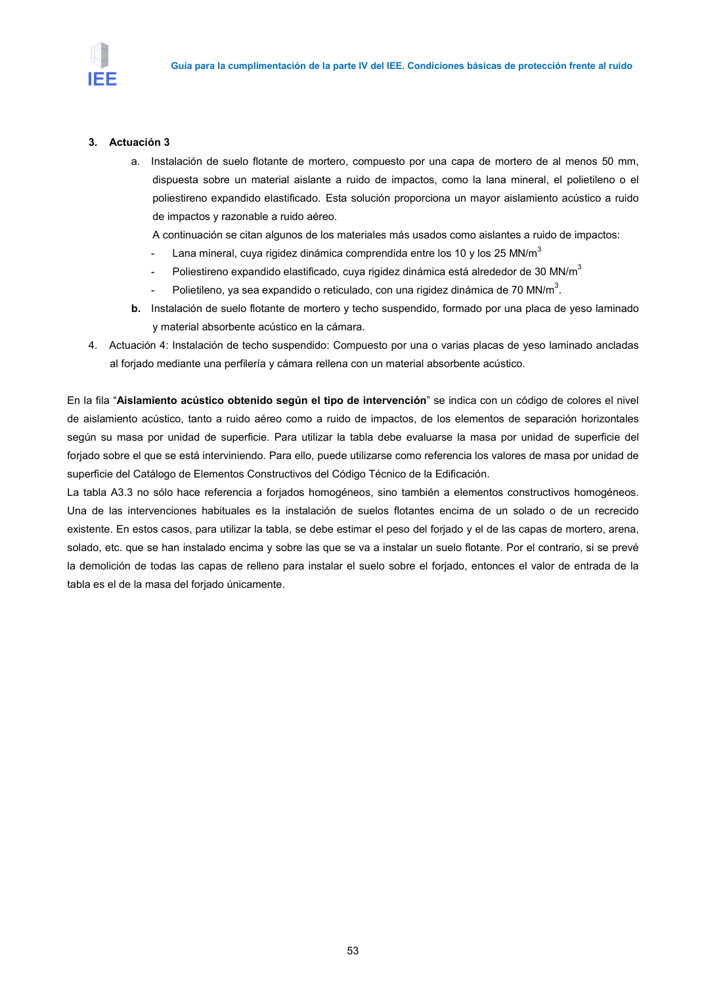

GUIA · Página 63 · versión 2016-11-01
SHA256: 813669d3066c0ff79457d57b80b0512a4fbb248bc5db1f7baf473c369a064738 · página física 63 de 65 · métodos de encabezado
solo si están cotejados.
Formatos: Markdown · JSON de bloques · PDF p. 63 · imagen PNG
Guía para la cumplimentación de la parte IV del IEE. Condiciones básicas de protección frente al ruido 53 3. Actuación 3 a. Instalación de suelo flotante de mortero, compuesto por una capa de mortero de al menos 50 mm, dispuesta sobre un material aislante a ruido de impactos, como la lana mineral, el polietileno o el poliestireno expandido elastificado. Esta solución proporciona un mayor aislamiento acústico a ruido de impactos y razonable a ruido aéreo. A continuación se citan algunos de los materiales más usados como aislantes a ruido de impactos: - Lana mineral, cuya rigidez dinámica comprendida entre los 10 y los 25 MN/m3 - Poliestireno expandido elastificado, cuya rigidez dinámica está alrededor de 30 MN/m3 - Polietileno, ya sea expandido o reticulado, con una rigidez dinámica de 70 MN/m3. b. Instalación de suelo flotante de mortero y techo suspendido, formado por una placa de yeso laminado y material absorbente acústico en la cámara. 4. Actuación 4: Instalación de techo suspendido: Compuesto por una o varias placas de yeso laminado ancladas al forjado mediante una perfilería y cámara rellena con un material absorbente acústico. En la fila “Aislamiento acústico obtenido según el tipo de intervención” se indica con un código de colores el nivel de aislamiento acústico, tanto a ruido aéreo como a ruido de impactos, de los elementos de separación horizontales según su masa por unidad de superficie. Para utilizar la tabla debe evaluarse la masa por unidad de superficie del forjado sobre el que se está interviniendo. Para ello, puede utilizarse como referencia los valores de masa por unidad de superficie del Catálogo de Elementos Constructivos del Código Técnico de la Edificación. La tabla A3.3 no sólo hace referencia a forjados homogéneos, sino también a elementos constructivos homogéneos. Una de las intervenciones habituales es la instalación de suelos flotantes encima de un solado o de un recrecido existente. En estos casos, para utilizar la tabla, se debe estimar el peso del forjado y el de las capas de mortero, arena, solado, etc. que se han instalado encima y sobre las que se va a instalar un suelo flotante. Por el contrario, si se prevé la demolición de todas las capas de relleno para instalar el suelo sobre el forjado, entonces el valor de entrada de la tabla es el de la masa del forjado únicamente.
